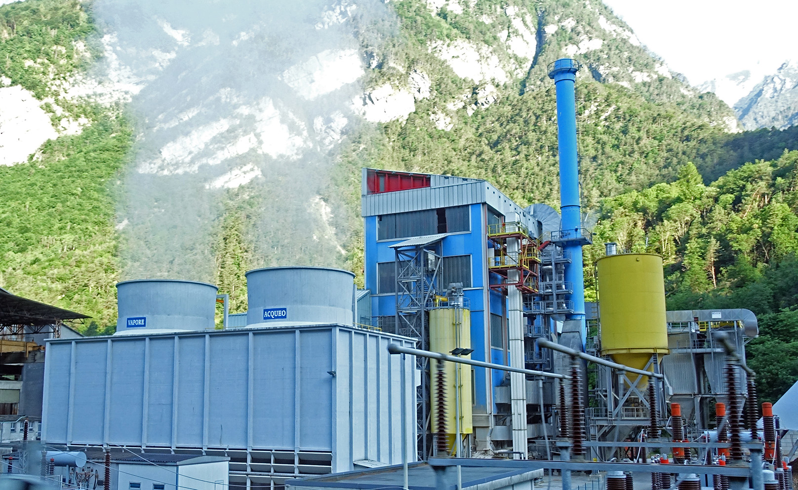

Solution #1 of 100
BIOMASS POWER
Did you know that energy can be made from plants? Energy that is made from plants is called biomass energy. This kind of energy is known as a ‘bridge’ fuel. It can be used instead of fossil fuels while the world works to be powered by 100 percent clean and renewable energy. We have a lot of work to do before most clean and renewable energy sources, like solar or wind energy, can supply energy 100% of the time. In the meantime, biomass energy is a great solution.

KEY WORDS
steam
When water is heated up to a
very hot temperature, water
vapor is created. Steam is like
a warm, or hot, mist.
harvest
When crops are picked and
gathered from the ground to
be eaten or sold
crops
Plants that are grown as food,
such as vegetables, grains,
and fruit.
seasonal crops
Crops that grow quickly during
only one season (i.e. spring
/summer). Seasonal crops do
not grow all year long.
There are two ways we use solar PV panels to make electricity.
- Utility companies fill a large field with solar panels. This is called “utility-scale” solar. These provide energy for many homes and businesses.
- Individual people install a few PV panels on rooftops or near homes and businesses. This is called “distributed” solar energy collection. This type of PV panel provides energy for the building they are attached to. In 2015, distributed solar made up 30 percent of all solar energy produced from PV panels. Germany is the leader in solar energy and has over 1.5 million distributed solar panels. In Bangladesh, a country next to India that has a population of over 157 million people, there are more than 3.6 million solar panels installed on or near homes.
- Farmers can plant fruit or nut trees in pastures and allow mushrooms to grow. Farmers can then sell the fruit, nuts or mushrooms to make extra money.
- Cows and other farm animals wear down the grass in pastures. They do this when they eat and walk on the grass all day, everyday. By having more living things on pastures, like trees, the farm ecosystem will be healthier and the land will be stronger.
- Silvopasture can help farmers and their animals adjust to different weather patterns and the more frequent droughts that will be a result of climate change.
- Alley cropping is when trees are planted in rows with crops in between them. This method helps trees fertilize crops.
- Parkland systems are when trees are scattered throughout fields with crops. There are many other ways to combine trees and crops and most of them make fields beautiful.
- LEDs use 90% less energy than conventional light bulbs, but make the same amount of light.
- Conventional light bulbs create light by heating special types of metal that glow when they get hot. This process of heating metal to make light wastes a lot of energy. In contrast, LEDs have a different process to make light and they do not give off much heat.
- LEDs are not created with toxic chemicals. Some other light bulbs do contain toxic chemicals. For example, compact fluorescent lights (CFLs) have a small amount of mercury in them.
- LED light bulbs last longer than other light bulbs.
- Support the water cycle
- Protect pollinators & soil from erosion
- Provide food and medicine for many people
- Provide people with places to live, adventure, and worship